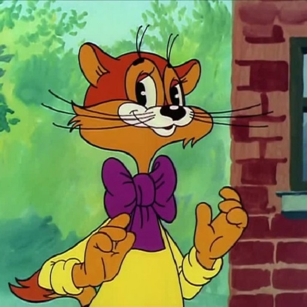

«Ну, погоди́!» — советский и российский мультсериал. История этого мультфильма началась в 1969 году. Режиссёром Геннадием Сокольским была снята «нулевая» серия для мультжурнала «Веселая карусель», главная идея которой легла в основу знаменитого мультсериала «Ну, погоди!». Основа мультфильма в том, что волк гоняется за зайцем в надежде его съесть, но по различным причинам это ему не удаётся. В итоге заяц всегда оказывается победителем, а волк в конце каждой серии говорит: «Ну, Заяц, погоди!».
«Ёжик в тумане» — советский мультипликационный фильм Юрия Норштейна. Выпущен студией «Союзмультфильм» в 1975 году. Фильм получил более 35 международных и всесоюзных премий. В 1976 году мультфильм получил первые призы на Всесоюзном фестивале мультипликационных фильмов во Фрунзе и на Фестивале фильмов для детей и юношества в Тегеране. В 2003 году «Ёжик в тумане» был признан лучшим мультфильмом всех времён по результатам опроса 140 кинокритиков и мультипликаторов разных стран.
«Кот Леопольд» — советский мультипликационный сериал про доброго кота Леопольда, которого в многочисленных ситуациях донимают двое мышей-хулиганов. Снимался на ТО «Экран» с 1975 по 1987 год.
«Крокоди́л Ге́на» — кукольный мультипликационный фильм Романа Качанова, выпущенный киностудией «Союзмультфильм» в 1969 году. В этом фильме впервые появились широко известные анимационные образы — Крокодил Гена, Чебурашка и старуха Шапокляк. Фильм был снят по мотивам книги Эдуарда Успенского «Крокодил Гена и его друзья».